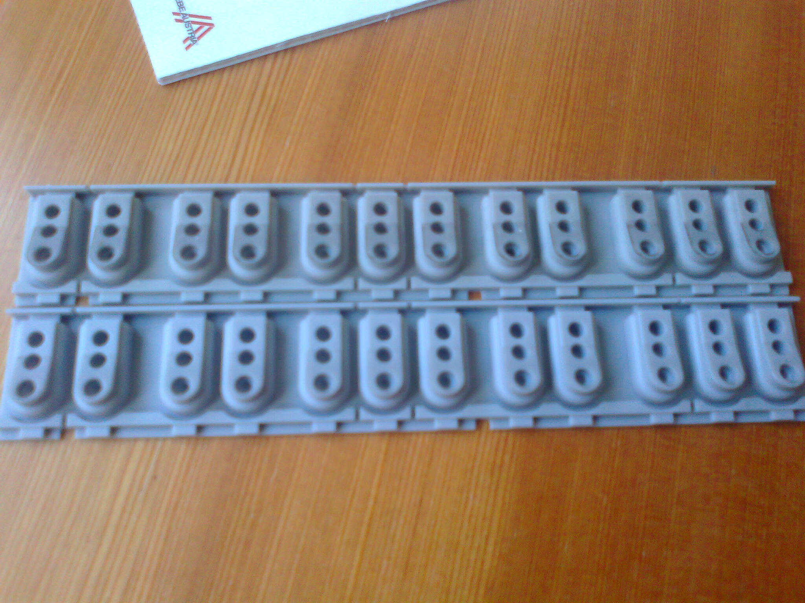
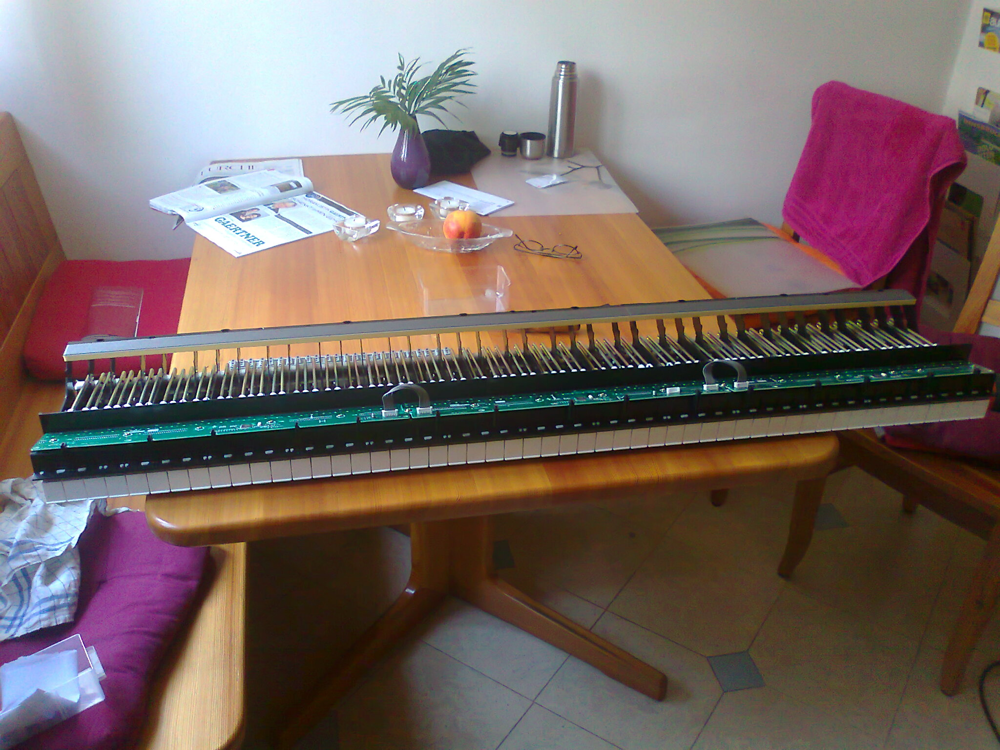

Mein elektronisches Klavier (ein Yamaha Clavinova CLP-170 mit GH3-Tastatur) hatte schon seit längerer Zeit einen unangenehmen Defekt: Bei manchen Tasten erzeugte das Klavier manchmal einen sehr lauten Ton. Wenn ich also ein Stück sehr zart spielte, fiel ich manchmal fast vom Klavierstuhl, wenn ein Ton plötzlich ganz unerwartet sehr laut war.
Diese Situation wollte ich also möglichst bald beheben und machte mich zu diesem Zwecke im Internet schlau: Laut dieser und dieser Seite ist das ein häufiges Phänomen, das durch den Verschleiß von Gummikontakten im Klavier verursacht wird und durch den Austausch derselben zu beheben ist.
Und so bestellte ich also bei einem nahegelegenen Musikgeschäft die entsprechenden Gummikontakte (Seriennummer V828660R), wobei ich nur die in der Mitte des Klaviers gelegenen Oktaven austauschen wollte, da ich ja die ganz hohen/tiefen Oktaven nicht so sehr malträtiere wie die mittleren. :) Die Gummikontakte für sechs Oktaven kosteten 75€, und da ich ja ein alter Dagobert bin, entschloss ich mich, den Einbau selbst zu wagen. Und so schraubte ich einige Zeit an dem Klavier herum, bis ich endlich die Klaviatur freigelegt hatte und die Gummikontakte entnehmen konnte. Tatsächlich: Diese schauten ziemlich verdreckt aus, sodass es mich gar nicht wunderte, dass sie nicht mehr richtig funktionierten! Zehn Jahre Klavierspiel hinterlassen eben doch seine Spuren …

Oben alt, unten neu.
Ich überlegte mir, ob ich nicht einfach durch Putzen der vorhandenen Gummikontakte auch schon das Problem beheben könnte, aber da ich keine Lust hatte, das ganze Klavier gegebenenfalls noch ein zweites Mal zerlegen zu müssen, entschied ich mich dafür, doch einfach die neuen Gummikontakte einzubauen. Nach dem Einbau schloss ich die Tastatur wieder per Kabel an das restliche Klavier an und hoffte, das Problem gelöst zu haben … doch aus dem Klavier kam kein einziger Ton. Nichts. Rien ne va plus.
So versuchte ich, nach Kottan’scher Art dem Problem detektivisch auf die Spur zu gehen: Ich kontrollierte die Kabel, die Anschlüsse, die Platinen … nichts schien auf einen Defekt hinzudeuten, es war einfach, als wäre die Tastatur gar nicht vorhanden. Ich war verzweifelt, sah ich doch schon vor mir endlose Ausgaben für Ersatzteile, denn ich befürchtete schon, durch elektrostatische Aufladung irgendeinem Mikrochip den Garaus gemacht zu haben. Schlussendlich überlegte ich, ob ich nicht vielleicht die Gummikontakte falsch herum eingebaut hätte? Als ich zu diesem Zwecke die auf den Gummikontakten aufliegenden Platinen ausbaute und einen Gummikontakt direkt auf die Platine auflegte und ihn anschlug, hörte ich auf einmal ein leises Tönchen aus dem Lautsprecher. Heureka! Was war aber das Problem? Nach einigen Experimenten ermittelte ich, dass ich die Platinen auf den Gummikontakten falsch montiert hatte und die Gummikontakte die Platinen gar nicht richtig berührt hatten, sodass man das mit einem Klavier vergleichen kann, wo die Hämmer die Saiten nie berühren, sondern schon zuvor zurückfedern.

Die Platinen (die Teile, die mit den grauen Kabeln verbunden sind), habe ich nicht richtig eingesteckt.
Jetzt ist der Patient jedenfalls wieder bei bester Gesundheit; das ursprüngliche Problem ist bisher nicht mehr aufgetreten und das Klavier wird hoffentlich die nächsten zehn Jahre wieder klaglos seinen Dienst verrichten. :)
Was habe ich aus dieser Sache gelernt?
Serviceanleitung besorgen: Vor dem Auseinanderbauen habe ich mir im Internet eine Anleitung für Techniker besorgt, die sehr hilfreich war, da ich nicht (wie früher manchmal) einige Teile ganz unnötig auseinandergenommen habe.
Schrauben nach Herkunft beschriften: Als ich das Klavier wieder zusammenbauen wollte, musste ich teilweise ziemlich herumprobieren, um zu wissen, welche Schraube in welches Loch kommt. Hätte ich die Zeit dafür aufgewandt, während des Zerlegens die Schrauben nach Herkunft zu beschriften, hätte ich mir unter dem Strich einige Zeit gespart.
Elektrostatische Entladungen verhindern: Da sich im Menschen manchmal eine elektrische Spannung zur Umgebung aufbaut, empfiehlt es sich, sich vor dem Hantieren mit Mikroelektronik zu erden. Dafür zum Beispiel auf den Schutzkontakt in der Steckdose greifen. (Nicht in die Löcher!)
Zubehör:
Akkuschrauber (magnetisiert): Spart soooo viel Zeit. Nicht so wie ich versuchen, mit der Bohrmaschine (mit Schraubenzieher-Aufsatz) Schrauben im Klavier zu lösen!
Alkohol: Zum Putzen der empfindlichen Kontakte, um Korrosion durch Fingertapper zu verhindern.
Licht: Wem noch nie eine Schraube in irgendein obskures Loch gefallen ist, der werfe den ersten Stein.
Ich hoffe, dass ich mit dieser Anleitung dienlich sein konnte — man weiß nie, wann man sein nächstes Klavier reparieren muss. ;)